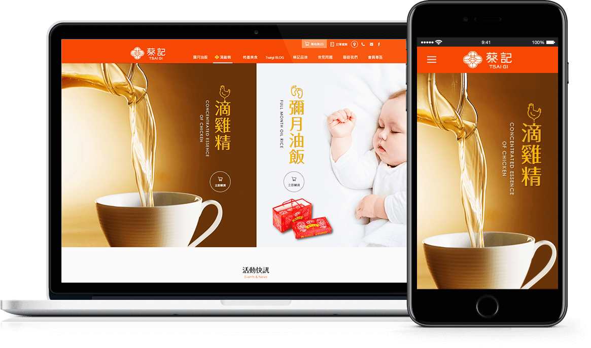
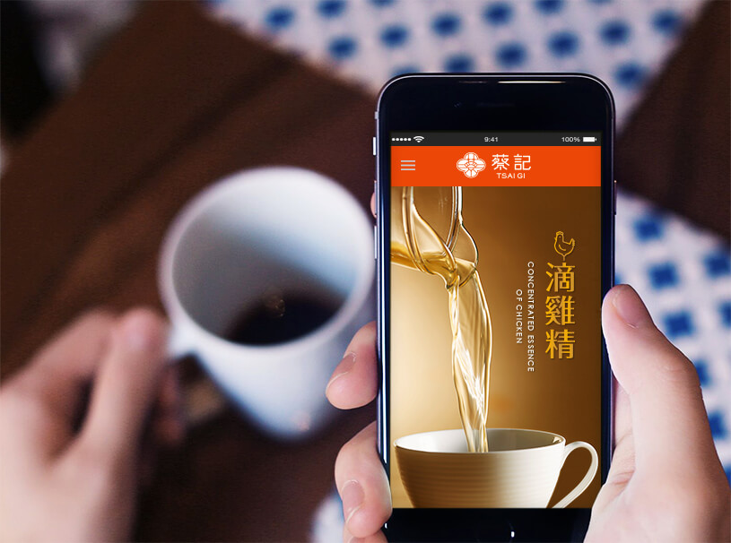
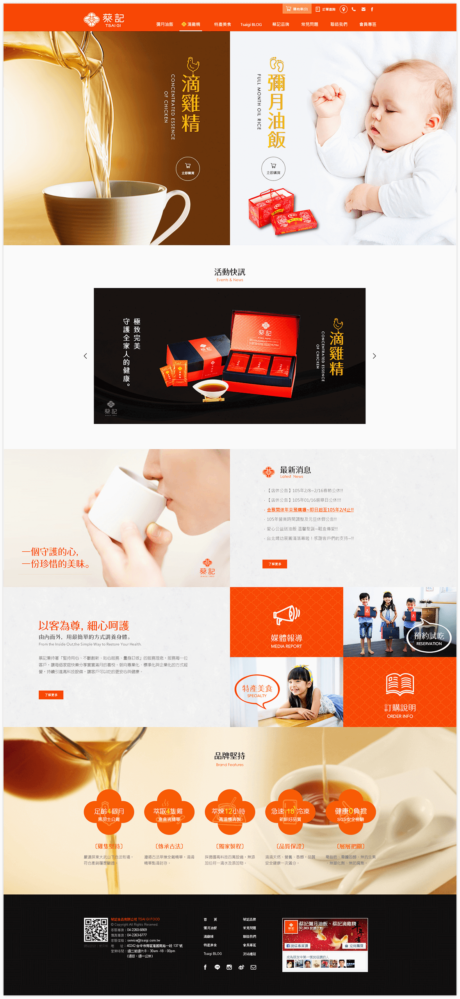

Web Design
TSAI GI FOODConcentrated Essence
of Chicken
Info
蔡記秉持著『堅持用心、不斷創新、貼心服務、量身訂做』的服務理念，服務每一位客戶，讓每個家庭分享滿月的喜悅。朝向專業化、標準化與企業化的方式經營，持續引進高科技設備，讓客戶可以吃的更安心與健康。
Date
03/16

TSAI GI FOODConcentrated Essence
Web Site
TSAI GI FOODConcentrated Essence
of Chicken
蔡記食品 / 2016 / 網站規劃設計
Description
蔡記食品的購物網站以主打產品「彌月油飯」、「滴雞精」兩項，希望傳達其品牌的精神，為傳遞這份文化的味覺記憶；真誠用心的服務，與您一童照顧守護家人們的健康 -【傳承暖意 ‧ 守護幸福】
Web Colors
-
#e84708
-
#000000
-
#ffee31
Google Fonts
- ・MAIN TITLE A OTF Folk Pro
- ・SECONDARY TITLE Century Gothic
- ・BODY COPY 微軟正黑體

ResponsiveWeb Design
原先以有在其他購物平台有銷售據點與穩定的消費客源，這次架設的全新購物網站則是希望透過獨立品牌網站建立品牌形象，並跳脫傳統電子商務的限制，加入響應式網站技術，掌握多螢裝置的顧客。
以卡片式區塊排版，讓網站資訊內容跳脫舊有型式，而更活潑。
搭配情境式自然攝影技術，讓蔡記的商品更貼近生活，親近人心。
WEBSITE CONCEPT
